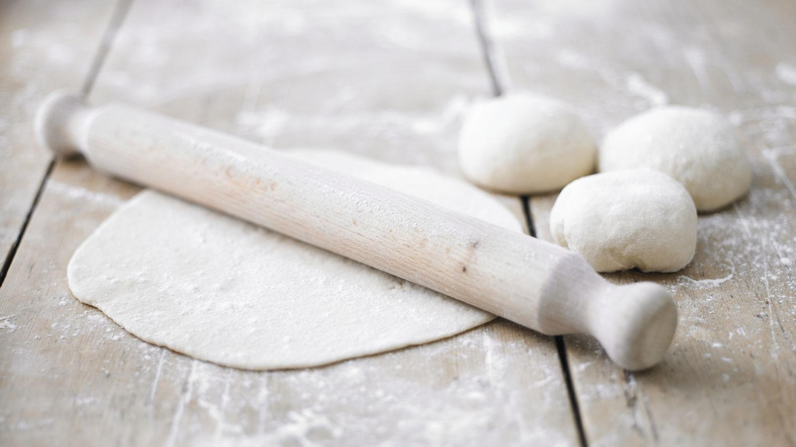
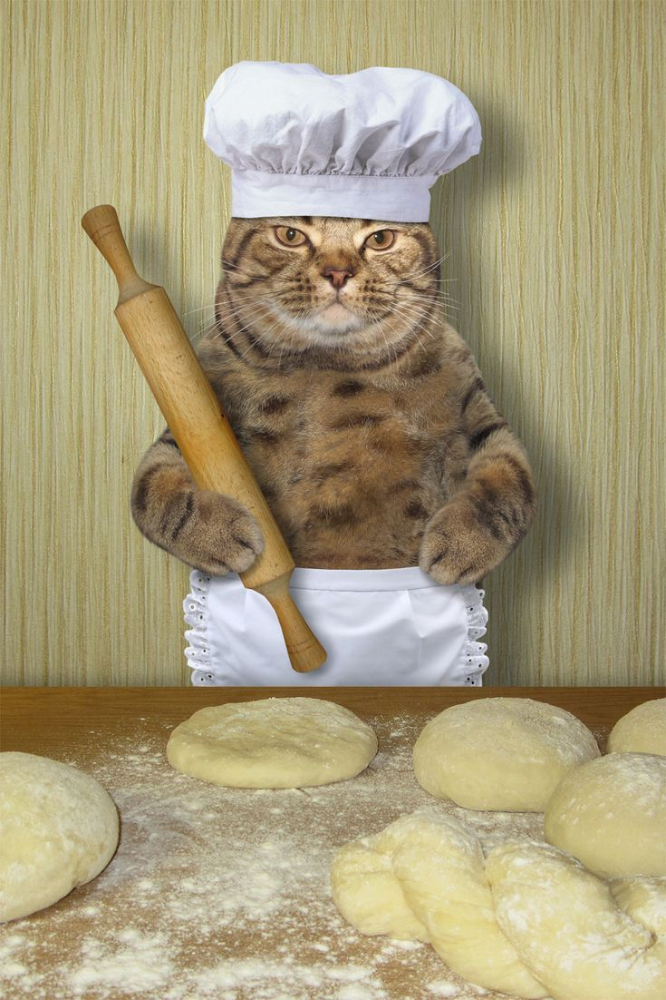

Pizza Dough

Pizza Dough is easy to make, just follow these steps!:
Ingredients
650g - Strong White Flour
25ml - Oil
Salt
7g - Yeast
325ml - Warm Water
50ml - Milk
- To make the dough, mix the flour, yeast and salt together in a large bowl and stir in the olive oil and milk. Gradually add the water, mixing well to form a soft dough.
- Turn the dough out on to a floured surface and knead for about 5 minutes, until smooth and elastic. Transfer to a clean bowl, cover with a damp teatowel and leave to rise for about 1½ hours, until doubled in size.
- When the dough has risen, knock it back, then knead again until smooth, roll into a ball and set aside for 30 minutes to 1 hour until risen again.
- Roll out to a size of your liking, then continue to make your Pizza!
Yummy!
